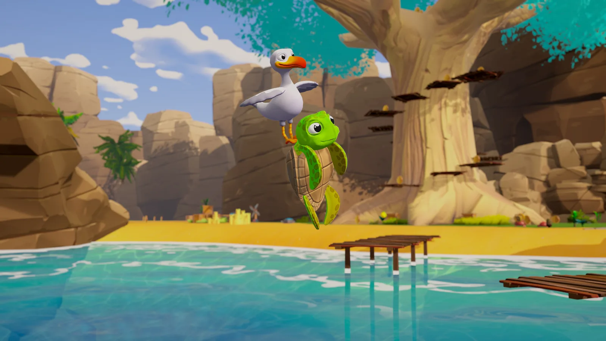
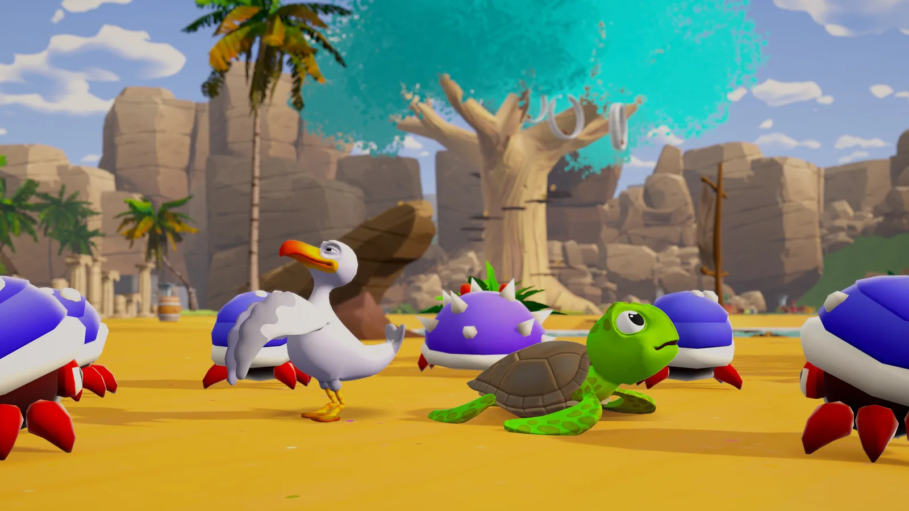
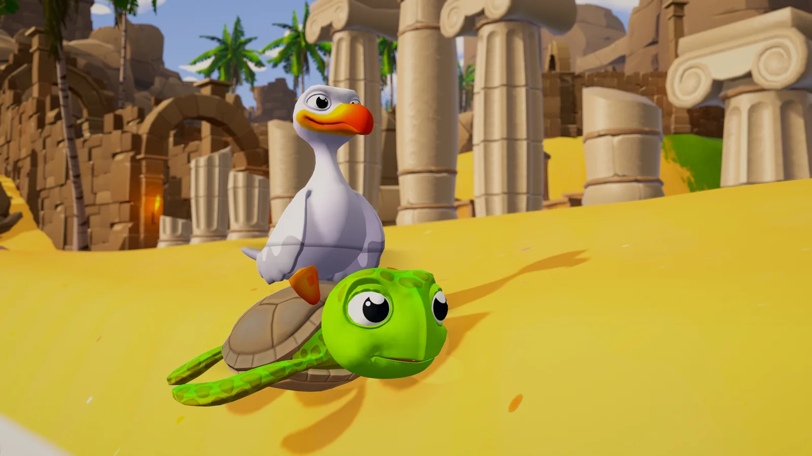
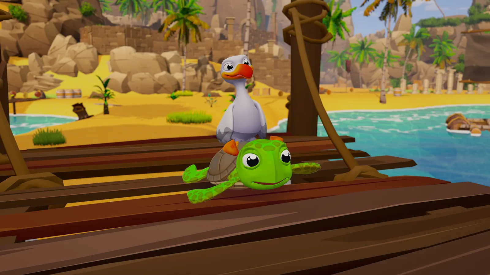

Case study · Studio work
Out of Water
A two-player co-op 3D platformer collectathon about a turtle and a seagull, played side by side in splitscreen or online: Shiverbug Studios' original IP. I joined in July as a gameplay programming intern, hired for the character and enemy code, and in October joined the board as Technical Director. This page covers what I've built on the game and how I run its technical side.

- RoleTechnical Director
- BeforeGameplay Programmer Intern
- EngineUnity 6 · C#
- PlayersTwo, local or online
The role
Giving a small team the tools to do their best work
Out of Water is made by a small team of artists and designers, and most of what they make only reaches the game through code and a build. My job is to make that path short and dependable, so the people with the ideas spend their time on the game rather than on waiting for me.
- Engineering on the game: the character and enemy framework, the tools the level designers build with, UI and performance.
- The build: the git workflow, pull request review, a tagged playtest build every fortnight, and the studio's repositories and access.
- Planning: the technical plan for the vertical slice we're building now.
- The team: getting artists and designers working confidently in Unity and git, so an art-only change never has to wait for a programmer.
Characters & enemies
One framework under every creature
Each hero runs on a hierarchical state machine that lives on its prefab, with its behaviour split across small sibling components and its feel tuned in ScriptableObject assets. The turtle and the seagull are built the same way, on the same engine and the same update pipeline, so almost everything is shared rather than copied. Both were rebuilt onto it from single file controllers, and the co-op moves the pair share, like riding on the turtle's shell and gliding together, sit on top.
Enemies get a smaller finite state machine assembled from shared pieces: a runner and a brain, components for movement, sensing, combat, health and reactions, and generic idle, patrol, chase and attack states. A standard melee enemy is configuration rather than code. A custom brain is only written when the decision graph is genuinely different, like the medium crab's spin and dizzy loop.
Underneath co-op sits the splitscreen plumbing: per player device routing, a camera each, and a platformer camera rig that follows the floor rather than the jump, so a hop doesn't drag the whole view up with it.

Tools for the team
Level tools that know the jump maths
The designers build levels from a blockout toolkit I wrote for them: signals, buttons, pressure plates, rings, movers, water currents and cages; spline tools that lay chains, plank walkways and ring courses along a curve; a blockout terrain that shapes itself to the level's floors and paints itself by rule; enemy clusters dropped in formation; and a click to place prop palette.
The Reachability Prober answers the question every platformer level raises: can they get there? It flies the game's own movement maths, with the open scene's tuning, to show where the turtle, the seagull or the pair can reach, which gaps they can clear and the fastest route between two points, without touching the scene.
Before a level goes into a pull request, Level Health checks it for the things that break a level quietly: switches wired to nothing, systems placed twice, enemies standing off the navmesh. After a playtest, a log viewer and heatmap read every tester's session back onto the level: where they went, where they died, which moves they used and what the frame rate did.

Systems
The game around them
- Online co-op on two PCs, joined from the game's menus, a Steam invite or a code. The host's game runs the enemies for both, and the level, the story and the save stay in step.
- Replays of every session, played back inside the real level from the main menu. A replay is built as an online guest whose host is a file, so it reuses the co-op code rather than duplicating it.
- Elder Trials: timed challenge rooms where the best run so far races beside the pair as a ghost, with medals that unlock new moves.
- A dialogue and cutscene system with one component NPC setup.
- A UI Toolkit front end on a shared token system: HUD, character select, pause, save slots, a controls tutorial, and accessibility options like a partner marker and an on-screen input overlay.
- Water in Shader Graph and custom URP HLSL: caustics, underwater fog, and currents and rafts the characters can ride.

Build & performance
A build the whole team can trust
I set up the git workflow the studio follows, with Git LFS for the art. Changes go through pull request review before they land, and a tagged playtest build goes out every fortnight, so there is always a known good version of the game to play and to show.
Performance is measured, not guessed: GPU driven rendering, quality tiers, LOD and culling passes, each checked branch to branch with a profiling tool I built for the team. One clean up in August took the project from 10.1 GB to 3.5 GB.
The team
Their art, our game
Every screenshot on this page is the work of Shiverbug's artists and designers: the characters, the island, the lighting. My side is the technology underneath, and the way the team builds on it. You can meet them at shiverbugstudios.com.